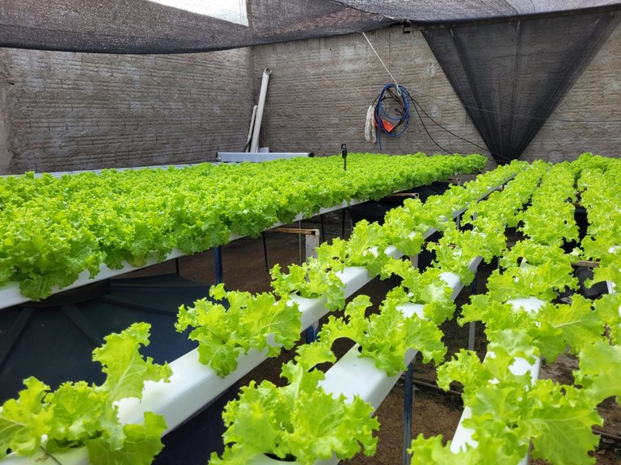
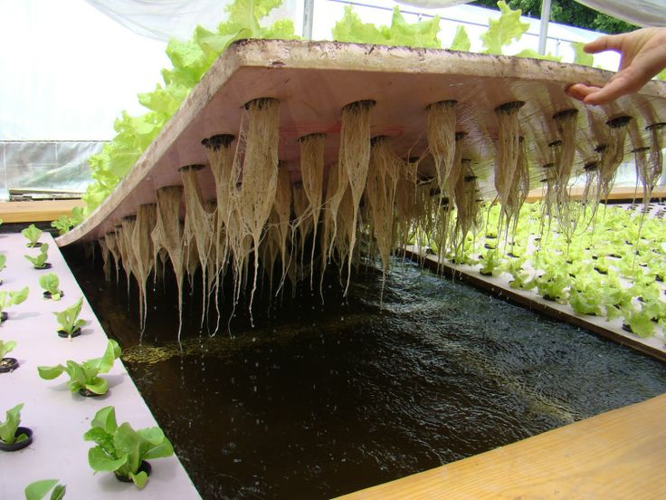
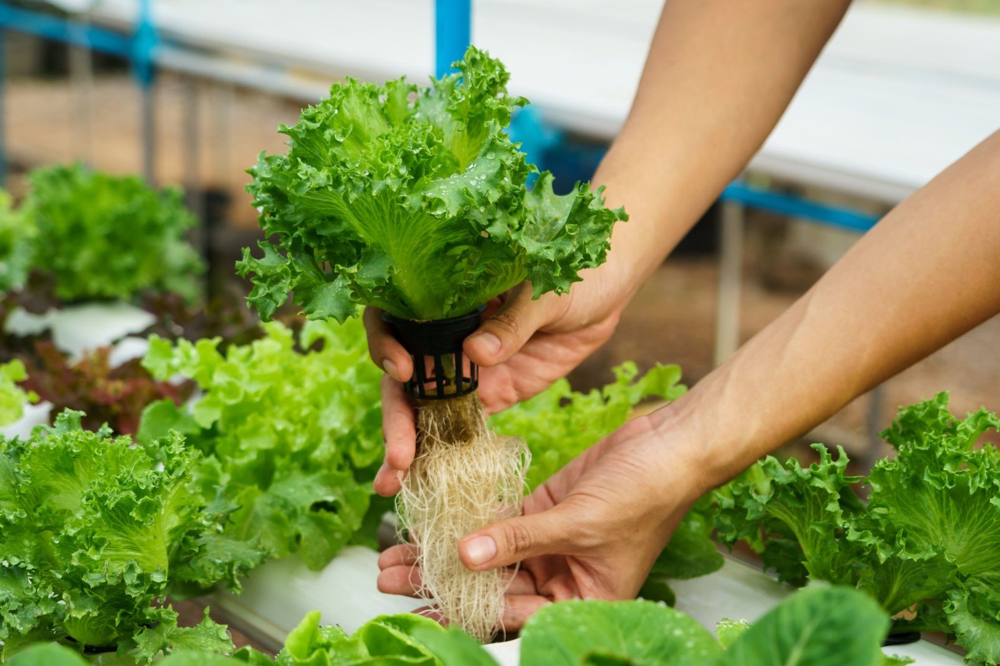

Hidroponia
A hidroponia é uma técnica de cultivo de plantas sem a necessidade de solo, onde as raízes ficam imersas em uma solução rica em nutrientes essenciais para o crescimento. Essa técnica tem ganhado cada vez mais popularidade devido aos seus benefícios.
Vantagens
- Uso eficiente de água, reduzindo o desperdício.
- Maior controle sobre os nutrientes que as plantas recebem.
- Eliminação de pragas e doenças transmitidas pelo solo.
- Possibilidade de cultivo em locais urbanos ou com pouco espaço.
Desvantagens
- Requer um investimento inicial maior para o sistema.
- Dependência de eletricidade para o funcionamento das bombas e sistemas automatizados.
- Necessidade de monitoramento constante do pH e nutrientes.
- Sistemas complexos podem demandar manutenção especializada.


